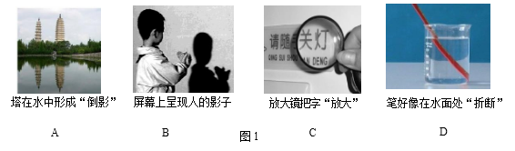

2017年北京市中考物理试题 · 选择题 第1、2、3、4、5题
题 2 分）
1．下列物品中，通常情况下属于导体的是
A．玻璃杯B．陶瓷碗C．铁锅D．塑料勺
2．图 1 所示的光现象中，由于光的反射形成的是

3．下列措施中，能使蒸发减慢的是
A．给湿头发吹热风 B．把湿衣服晾在通风向阳处
C．把盛有酒精的瓶口盖严 D．将玻璃板上的水滴向周围摊开
4．下列家用电器中，将电流热效应作为工作原理的是
A．电视机 B．电热水器 C．抽油烟机 D．电冰箱
5．下列物态变化的实例中，属于液化的是
A．初春，积雪消融 B．夏天，草叶上形成露珠
C．深秋，屋顶的瓦上结了一层霜D．冬天，室外冰冻的衣服变干了